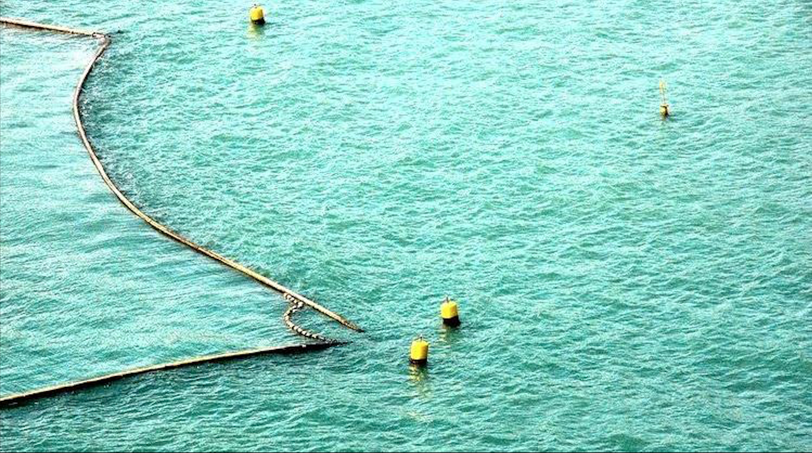

1 / 3

Shark nets
2 / 3

Ocean
3 / 3
Nets
A Shark net is a submerged net placed around beachs to reduce shark attacks on swimmers. The majority of Shark nets used are Gillnets which is a wall of netting that hangs in the water and captures the targeted sharks by entanglement. Shark nets do not offer complete protection but work on the principle of "fewer sharks, fewer attacks". They reduce occurrence via sharks mortality. Sharks nets such as those in New South Wales are designed to entangle and kill sharks and other animals that pass near them.
Shark net meshing was thought up by the New South Wales Fisheries in 1935, after a decade and a half of relentless Shark attacks off Sydney beaches. In March 1935, for example, two people — one at North Narrabeen and one at Maroubra — were killed by great white sharks in a single week. The meshing was never designed to enclose a piece of water — even back then, they knew barrier nets would never survive a surf zone. Instead, it was designed to catch large dangerous sharks as they swam within range of the surf. At first, the catch was huge; over 600 sharks in the first year of operation, off just a few Sydney beaches. But over time, even without adjusting for the spread of the program across almost all Sydney beaches and into Wollongong and Newcastle, the catch declined. Today's New South Wales meshing annual average catch is 143 sharks, quite a number of which are released alive. Nets were also first deployed off certain beaches off KwaZulu-Natal (KZN, formerly Natal) South Africa, in 1952
The NSW shark meshing programme (shark nets) protects 51 beaches at a cost of around A$1.5m per year. Interfering with the nets carries a maximum fine of A$5,500. The economic efficiency of the program is disputed, with critics pointing out that shark attacks still occur at beaches with shark nets. In NSW, there were 36 attacks at four beaches without nets over a combined 222 years — and 24 attacks at the same four beaches with nets in place over a combined 214 years. Queensland’s Shark Safety program costs around A$1.7m per year. Western Australia spent A$28m on shark attack mitigation (culling rather than nets is used in WA) between 2008 and 2015. Fifty shark attacks have been recorded in New Zealand (to 2014). Dunedin phased out shark nets in 2004 amid concerns about their effectiveness and the annual cost of around NZ$40,000 per year.
Call to ban shark nets ‘would put lives at risk’
Do shark nets really keep you safe?
Shark nets have been protecting beach-goers for over 70 years but they catch more than just sharks. So should the nets be removed?
Nick Carroll: the facts about shark nets